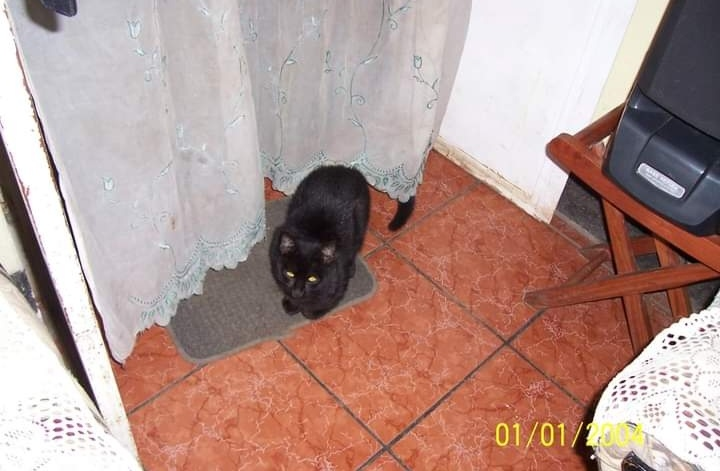

Tareíta de 5to "B", INED UwU
Como primer proposito de ésta página web, una foto mía:
Como segundo proposito de la página web, una foto de mi mascota:

(La foto es vieja, porque actualmente no tengo mascotas; la foto es de un gato que era mi mascota cuando era niño.. jeje).